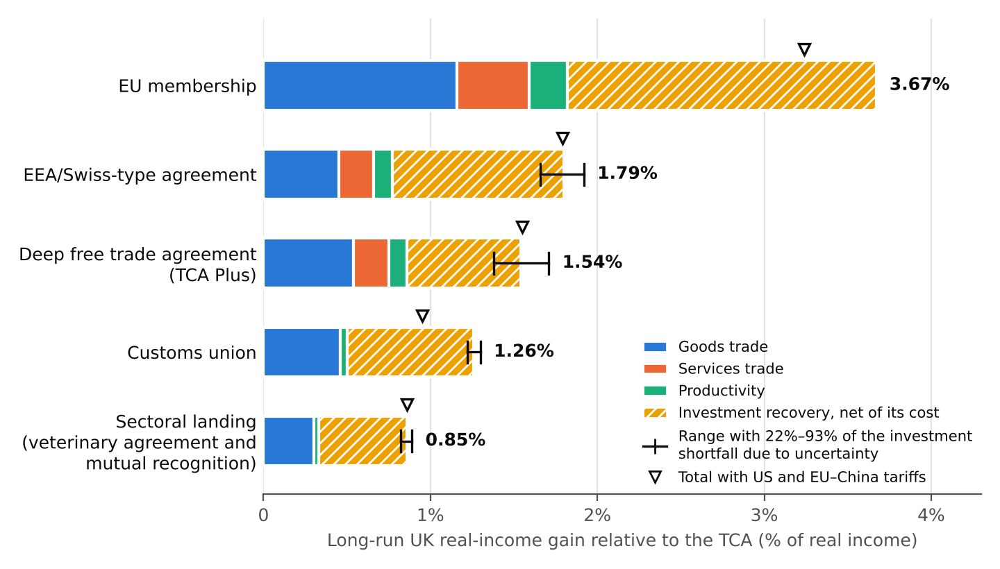

What would the UK gain from closer ties with the EU? Trade, productivity and investment gains from deeper UK–EU integration
Show abstract
In September 2026 the Prime Minister said that all options for the UK’s relationship with the EU are on the table, from the current Trade and Cooperation Agreement (TCA) to full membership. We provide comparable estimates of what each option would be worth to the UK relative to the TCA, combining a meta-analysis of 37 gravity studies, a general equilibrium model of world trade, and evidence on productivity and on business investment lost since the referendum. Through lower trade costs in goods and services, re-joining the EU would raise UK real income by 1.6%, and by 1.8% with productivity effects. If membership also brought back the lost investment, the long-run gain would be 3.7%, or 2.9% if that shortfall would have narrowed anyway; about three-quarters of it would arrive within 15 years of accession. An EEA/Swiss-type agreement, a deep free trade agreement or a customs union would be worth 1.3–1.8%. How much lost investment an agreement brings back depends on its legal permanence: how hard it would be to undo. In goods trade a customs union and an EEA/Swiss-type agreement deliver similar gains, but a customs union would oblige the UK to apply the EU’s external tariff, including any tariff on imports from China, and once services and investment are counted the EEA/Swiss-type agreement is ahead.
Ten years after the referendum, every option for the UK’s relationship with the EU is back on the table. In September 2026 the Prime Minister said the options run from the current Trade and Cooperation Agreement (TCA) to full membership, and in October told the House of Commons that after the UK–EU summit in Brussels on 20 November the two sides should start a dialogue about the long-term relationship. This paper puts the options on one scale, measured from the TCA. It pools 37 gravity studies (3,554 estimates) to measure the trade effect of each type of agreement, solves a general equilibrium model of world trade covering 81 economies, and adds services trade, the productivity effects of trade liberalisation and the recovery of business investment held back since the referendum.

| Agreement | Lower trade costs, goods and services | Long run, with productivity and investment |
|---|---|---|
| EU membership | +1.59% | +3.67% (£112bn a year) |
| EEA/Swiss-type agreement | +0.66% | +1.79% (£54bn) |
| Deep free trade agreement (“TCA Plus”) | +0.74% | +1.54% (£47bn) |
| Customs union | +0.46% | +1.26% (£38bn) |
| Sectoral landing (veterinary agreement and mutual recognition) | +0.30% | +0.85% (£26bn) |
Key findings
- Membership gives the largest gain under every assumption tested: 1.6% of real income from lower trade costs in goods and services, and 3.7%, about £112 billion a year, in the long run once productivity and the recovery of lost investment are counted. Lower trade costs alone would raise UK goods exports to the EU by about 40%.
- The trade-cost gains are the best-measured part. Productivity and investment roughly double them but rest on judgements: if the 13.6% shortfall in business investment would have narrowed anyway under the TCA, membership would be worth 2.9%.
- Legal permanence matters as well as depth. Agreements that are harder to undo bring back more of the investment held back by uncertainty. That is why an EEA/Swiss-type agreement ranks first among the partial options in 85% of the 5,751 combinations of assumptions tested.
- Services access matters as much: an EEA-type agreement with full access is worth 2.34%, a Swiss-type agreement without it 1.25%.
- A customs union ties the UK to EU trade policy. In goods trade it is level with an EEA/Swiss-type agreement (0.42% each), but if the EU taxed all of its imports from China at the US rate it would fall 0.29 percentage points behind, and unwinding the UK’s own trade agreements outside the EU could lower it further.
- The gains take time; the 2025 US tariffs change little. If the UK re-joined in 2035, output would be 1.5% higher at accession and 2.8% higher by 2040, with about three-quarters of the long-run gain arriving by 2050.
What this means for each option
The paper does not recommend an option — that choice also turns on sovereignty, budget contributions, free movement and what the EU would agree, which the estimates do not price. It shows what each option is worth and which features would make it worth more.
- Membership gives the largest gains under every assumption, and brings a vote on EU rules, budget contributions and free movement.
- An EEA/Swiss-type agreement keeps UK trade policy independent. Its value rises with services access, and an EEA-type agreement is the stronger form.
- A customs union is a conditional option: its value depends on EU trade policy towards third countries, over which the UK would have no vote.
- A deeper TCA is strong on trade, but unless it is anchored in more permanent institutions it brings back less of the lost investment. The near-term reset agenda — the veterinary agreement, emissions-trading linkage and mutual recognition of conformity assessment — is worth banking while the longer-term choice is made.
- Across all options, the government should compare the choices on the same basis, against the TCA, and report the better-measured gains from lower trade costs separately from the larger but less certain gains from productivity and investment.
In the media
- What would the UK gain from closer ties with the EU? — The Productivity Institute, 20 November 2026.
- Financial Times, November 2026.
- Related commentary: The options are familiar. The world around them is not. — Jun Du, The Productivity Institute blog, 6 October 2026.
Working paper: Centre for Business Prosperity / The Productivity Institute Working Paper, November 2026. With Jun Du.